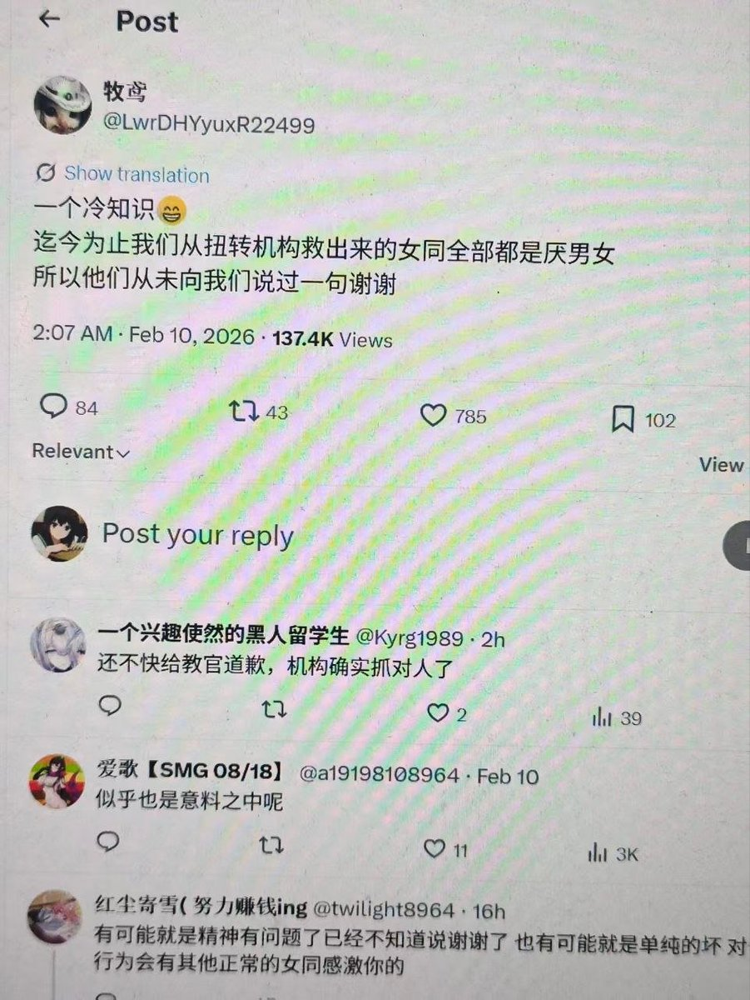

🍀🍥竹蜻蜓🍥🍀
@zqtlovekris99
@AraBh_channels @sauricat 女同看了更厌男了，当神父还要立牌坊，又要救又要抱怨人家厌男，那要不就别救呗这么喜欢听谢谢你去路边找个叫花子扔两块钱就可以收获很多磕头感谢了。骂这些女同的你如果是gay被关扭转然后被女的救了你也不见得说人几句好话

☸️BuKi道心
@AraBh_channels
@sauricat 要記住，這些好事是整個社群努力的成果，不是他一個人拿來掩蓋自己惡行的理由，我對他的厭惡就是從當初看到他這條推文開始的（因爲一些原因用的拍屏截圖）.
當時已經許久沒關注過救援活動的我看到這條推文時，還刻意去聯係贏駟問這貨是誰。 https://t.co/8V67fX9qeV